SmartTools アドオン解説書
SmartModeling Suite（スマートモデリング スイート） 解説書
版 1.0.0 ／ 2026年11月18日 ／ Blender 5.1.2 用
SmartModeling Suite は、メッシュを作ったり直したりする作業を助けるツール集です。サイドバー（N パネル）の「Smart Modeling」タブに、全部のツールが作業の種類ごとに並びます。各ツールは、ボタンを押した時に初めて読み込まれます。そのため、使わないツールは Blender を重くしません。裏でずっと動く仕組みを持つ機能（常時機能）だけは、「常時機能切り替え」でオン・オフを選べます。ショートカットは自動では登録されません。必要なものだけ、各ツールの「手動キーマップ登録」を見て自分で登録します。
片方で直した耳を、もう片方のモデルにも
同じ形のモデルを2体直すとき、左で直した頂点の位置を右へ貼り付けます。作例では右の耳が左と同じ形になります。
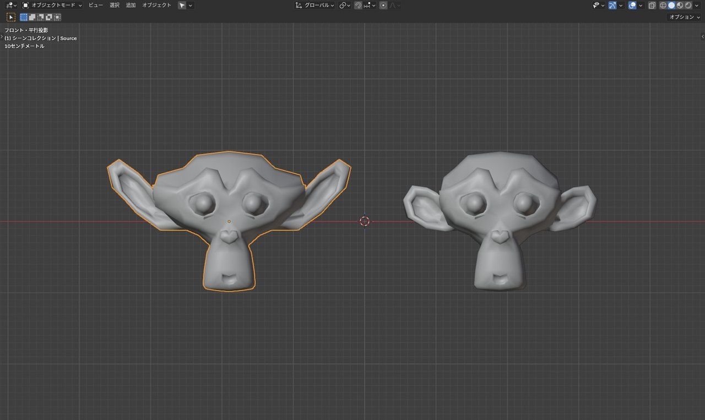
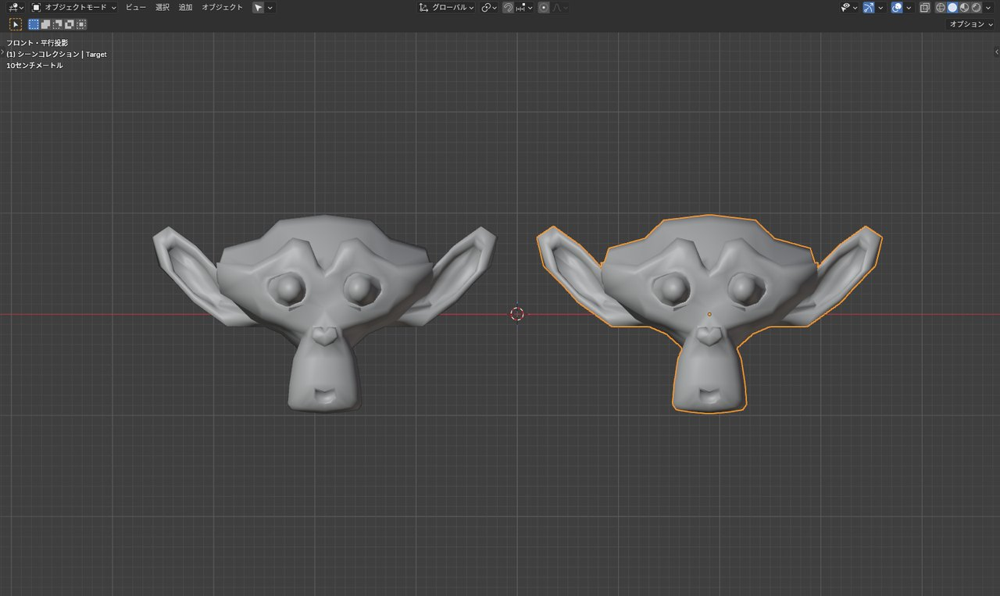
試す前に 作例と同じ頂点対応のモデルを使う。
1. このアドオンでできること
頂点の編集・整列・削除・リトポ・ハードサーフェス・生成など、モデリングの補助ツールを 1 つのサイドバーにまとめたアドオンです。
- 選んだ頂点の位置を覚えて、別のメッシュの同じ番号の頂点へ貼り付ける（頂点コピー）
- 頂点を、つながった辺に沿ってだけ動かす（頂点スライド）
- 頂点・辺・面をまっすぐ・平らに揃える（メッシュ整列）
- 自動マージとスナップを 1 回の操作でまとめて切り替える（マージスナップ）
- 確認の画面を減らして、選択に合わせて素早く削除する（直接削除）
- 書き出し前に、選んだオブジェクトの名前・トランスフォーム・データをまとめて整える（モデル整理）
- 辺にクリース（細分化した時の角の立ち具合）をプリセットで付ける（クリースプリセット）
- ハードサーフェスの陰影を整える重み付き法線を付ける（重み付き法線）
- 注釈の線を帯状の面に変換する（スケッチサーフェス）
- 面に沿って四角い面の帯を描き、リトポを進める（クアッドリトポ）
- ブーリアン・ループ整理・散布・地形などのコマンドを大きなアイコンから使う（統合モデリングツール）
- 同梱の各種ツール（ループツール、エッジフロー、ボルト生成、樹木生成など）を同じサイドバーから使う
- 片方のメッシュで直した形を、頂点の数とつながりが同じ別のメッシュへ写したい時
- リトポで、頂点を面の流れに沿ってずらしたい時
- 書き出しの前に、スケール適用・名前・不要データの整理をまとめて済ませたい時
- 機械や小物のハードサーフェスで、角の立ち具合と陰影を整えたい時
- 背景用に、地形・木・ツタ・雪・建築パーツを手早く作りたい時
ひと目で分かる例
このアドオンを使うと、画面は次のように変わります。くわしい操作は 5 章の各機能の「実例」で説明します。
実例波打った頂点の列をまっすぐな直線にそろえる（格子の平面で試した様子）
でこぼこに波打った 1 列の頂点を選び、両端を結ぶまっすぐな線の上に並べ直します。
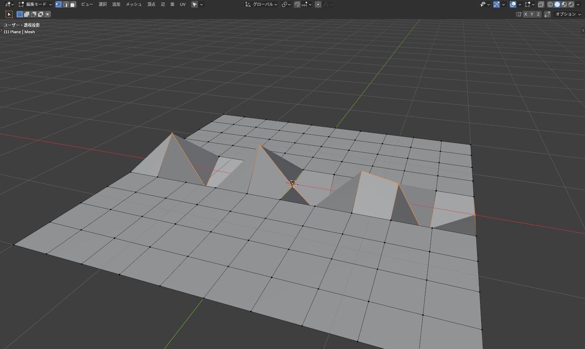

- 平面を編集モードにし、頂点選択にする
- 波打っている 1 列の頂点を、端から端まで選ぶ
- 「Smart Modeling」タブ →「整列・フロー・変形」→「メッシュ整列」を開く
- 「実行」の欄の「3D直線」を押す
見どころ：選んだ列の山と谷が消え、両端を結ぶ 1 本の直線に並びます。選んでいないほかの列は動きません。陰もすぐに正しくなり、列の両側の面がなめらかに見えます。
実例円柱でスザンヌに穴をあける（ブーリアン）（スザンヌと円柱で試した様子）
頭を貫く円柱をカッター（削る側）にして、スザンヌに丸い穴をあけます。元の形は残したまま、モディファイアで削ります。
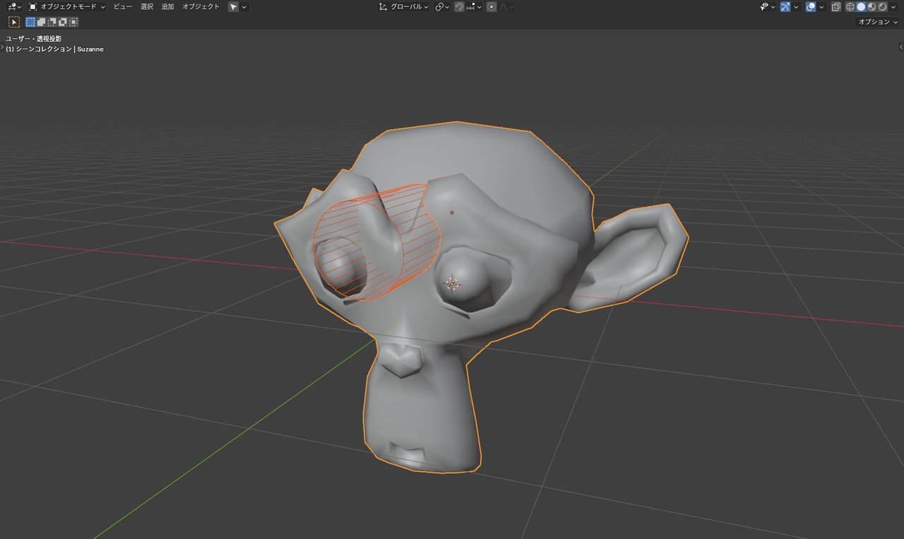
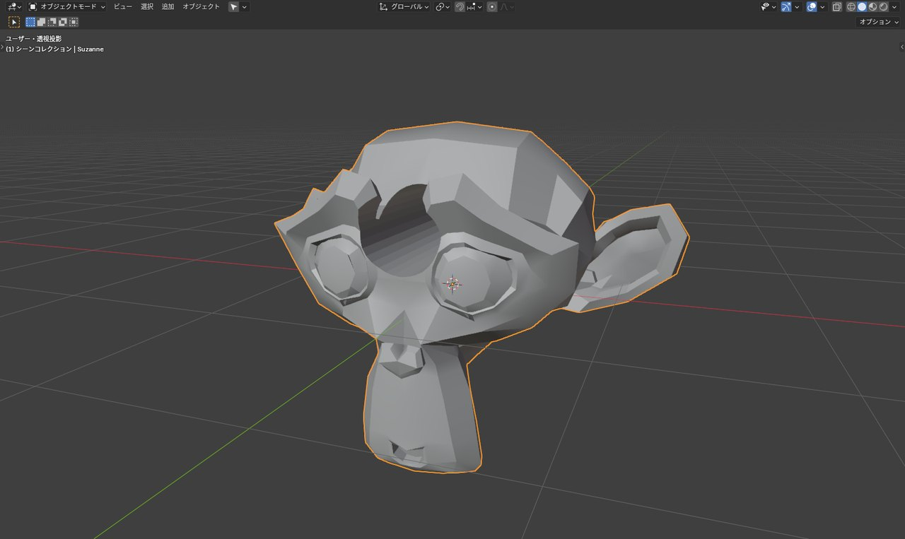
- カッターの円柱を選び、Shift キーを押しながらスザンヌを選んで、スザンヌをアクティブにする
- 「Smart Modeling」タブ →「ユーティリティ」→「統合モデリングツール」を開く
- 「実行」の欄の「ブーリアン融合を作成」を押す
見どころ：円柱が隠れ、通っていた所に丸い穴があきます。あわせて角に小さな面取り（ベベル）が付き、陰影がくっきりした角ばった見た目になります。
2. 目玉の機能
このアドオンならではの機能を、図に番号を付けて説明します。図の中の番号と、図の下の一覧の番号が対応しています。図を押すと大きく表示されます。設定の一つ一つは 5 章の各見出しで説明します。
2-1. クアッドリトポ（表面に描いて作り直す）いちばんの売り
ハイポリの彫刻やスキャンの上に、四角い面（クアッド）だけの軽いメッシュを描いて作り直す（リトポ）道具です。表面をクリックしていくとクアッドの帯が 1 列ずつ伸び、広い所は塗るようにドラッグすると、複数列の帯がまとめてできます。描いた面はいつも元の表面（ターゲット）に吸い付くので、後から形を合わせ直す手間がありません。
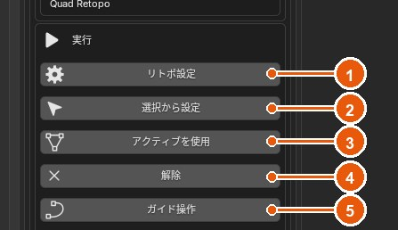
- 1リトポ設定：ターゲット（形を写し取る元のメッシュ）・オフセット・最大投影距離・前面のみをまとめて決める
- 2選択から設定：選んでいるメッシュをターゲットにする
- 3アクティブを使用：アクティブのメッシュをターゲットにする
- 4解除：ターゲットを外す
- 5ガイド操作：選んだ辺のガイド登録・解除・選び直しをまとめたポップアップ
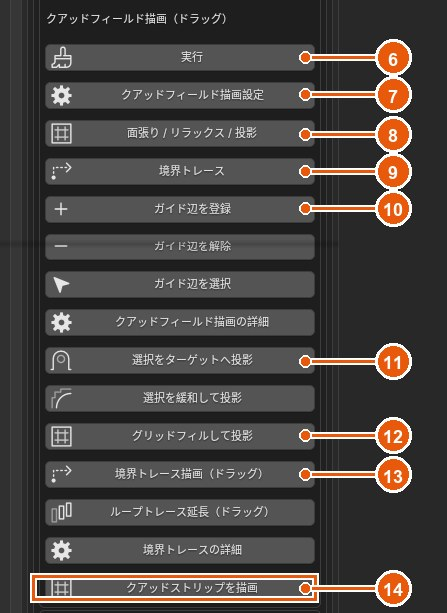
- 6実行（クアッドフィールド描画）：面を塗るようにドラッグして、複数列のクアッドの帯を一度に作る
- 7クアッドフィールド描画設定：パッチの幅・密度・流れの誘導・ステッチ・仕上げ
- 8面張り / リラックス / 投影：穴を埋める・ならす・投影する道具をまとめたポップアップ
- 9境界トレース：開口部・袖口・継ぎ目に沿って延ばす道具をまとめたポップアップ
- 10ガイド辺を登録：選んだ辺をガイド辺にする。⑥ の流れの向きがガイドに沿う
- 11選択をターゲットへ投影：選んだ頂点をいちばん近い表面へ移し、法線の向きにオフセットの分だけ浮かせる
- 12グリッドフィルして投影：開いた境界のループを選んで押すと、格子の面で埋めてから投影する
- 13境界トレース描画（ドラッグ）：開いた境界から、ドラッグした向きへ面を延ばす
- 14クアッドストリップを描画：表面をクリックしていくと、1 列のクアッドの帯ができる
- ① の「リトポ設定」でターゲットを決める。元のメッシュを選んで ② の「選択から設定」を押すのが早い。
- ⑭ の「クアッドストリップを描画」を押し、表面をクリックしていく。1 回目で始点、2 回目で向き、3 回目で確定し、その後はクリックごとに 1 段ずつ延びる。Alt で幅、Ctrl+Alt で厚みを変える。右クリックで一続きを終え、Esc か Enter で描画を終えると UV も作る。
- 1 本ずつ描くには広すぎる所は、⑥ の「実行（クアッドフィールド描画）」で塗るように描く。左ドラッグで描き、Backspace で 1 手戻し、右クリックか Enter で確定、Esc で取り消す。
- 仕上げに ⑪ の「選択をターゲットへ投影」や ⑫ の「グリッドフィルして投影」で、穴を埋めて表面に吸い付ける。
- フィールド描画は、ガイド整列・ライブマージ・辺スナップ・境界追従・自動フィル付き。⑩ でガイド辺を登録すると、流れの向きがガイドに沿う。
- 「前面のみ」をオンにすると、モデルの裏側へ突き抜けた投影を防ぐ。投影最大距離を 0 にすると、距離の制限なしで投影する。
- 袖口や開口部は、⑬ の境界トレース描画で縁に沿って延ばせる。
- ターゲットが未設定のまま始めた時は、② を押すか、ターゲットも一緒に選んでから描く。
くわしい設定：5-5. リトポと再構築
2-2. 頂点コピー（形だけを別のメッシュへ写す）図で見る
左のスザンヌ（耳を大きくした形）をコピーし、右のスザンヌへ貼り付けました。写るのは頂点の位置（形）だけで、右のスザンヌの置き場所は変わりません。形をシェイプキーとして書き込むこともできます。
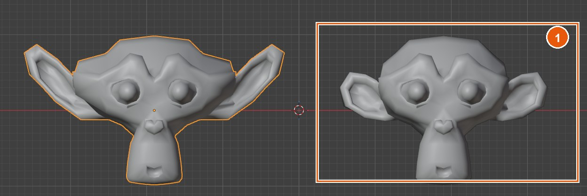
- 1貼り付け先：右のスザンヌ

- 1貼り付け先：右のスザンヌ
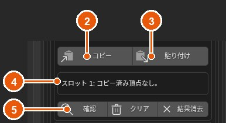
- 2コピー：選んだメッシュの形をスロットに覚える
- 3貼り付け：スロットの形を、選んだメッシュへ写す
- 4スロット：形をしまう棚。いくつも覚えておける
- 5確認：書き込まずに、頂点の対応がとれるかだけを確かめる
- 形の元（左）を選び、② の「コピー」を押す。
- 貼り付け先（右）を選び、③ の「貼り付け」を押す。
- 貼り付けの方式：Exact（同じ頂点番号へそのまま）・Mirror Exact（左右を反転して）・Smart（頂点の対応を推定して）・Mirror Smart・Surface Project（表面へ投影して）。Exact 系は、同じトポロジーで同じ頂点順のメッシュどうしで使う。
- 書き先を選べる：メッシュそのもの・新規シェイプキー・指定のシェイプキー。
- 貼り付け先を選べる：アクティブ・選んでいる全部・コレクションの中の全部・.L/.R を反転した名前の物・名前を指定した物。
- 頂点グループ・UV・カスタム法線もコピーできる。
くわしい設定：5-3. 編集と転送
2-3. 頂点スライド（G・R・S をそのまま辺に沿わせる）図で見る
「頂点スライドを切替」をオンにしている間は、編集モードのふだんの移動・回転・拡大縮小と、トランスフォームのギズモで動かした頂点が、つながった辺の上を滑るように補正されます。形を崩さずに、ループの位置だけを整えられます。「常時機能切り替え」で「頂点スライド」を「有効」にしておくと、3D ビューのヘッダーにも同じ切り替えのボタンが出ます。
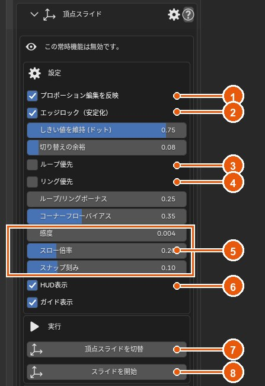
- 1プロポーション編集を反映：プロポーショナル編集がオンの時、半径の中の頂点も一緒に滑る
- 2エッジロック（安定化）：滑らせる辺の選び直しを抑えて、動きを安定させる
- 3ループ優先：迷った時、辺のループに沿う向きを選ぶ（L キー）
- 4リング優先：迷った時、リングをまたぐ向きを選ぶ（R キー）
- 5感度〜スナップ刻み：動きの細かさと、スナップの刻み
- 6HUD表示：スライド中に、比率とキーの案内を画面に出す
- 7頂点スライドを切替：オンの間、ふだんの G・R・S とギズモの動きを辺の上へ補正する。⑨ と同じ
- 8スライドを開始：その場で頂点スライドを始める
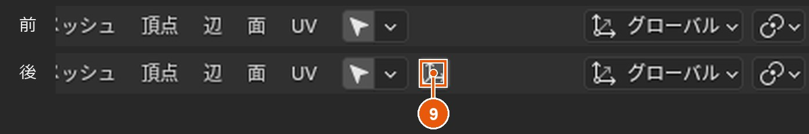
- 9ヘッダーの切り替えボタン：「UV」の右に出る矢印のボタン。⑦ と同じ働き
- 「常時機能切り替え」で「頂点スライド」を「有効」にする。無効のままだと ⑦ は押せず、ヘッダーの ⑨ も出ない。
- 編集モードで、⑦ の「頂点スライドを切替」かヘッダーの ⑨ を押してオンにする。
- ふだんどおり G・R・S やギズモで頂点を動かす。頂点は、つながった辺の上を滑る。
- 終わったら、もう一度押してオフに戻す。オン・オフはファイルに保存されず、開き直すとオフから始まる。
- C で挙動を切り替え、Shift+C でプロポーショナル編集を入れる・切る。
- L でループ優先、R でリング優先、B で基準（個別 / アクティブ）を切り替える。
- Shift でゆっくり、Ctrl でスナップ、Alt で向きを反転する。
- マウスのホイールでプロポーショナルの半径を変え、数字を打つと比率を直接決められる。
くわしい設定：5-2. 常時機能切り替え、5-4. 整列・フロー・変形
3. 準備
アドオンの入れ方・画面を日本語にする方法・N パネルと「？」ヘルプの共通の使い方は、「SmartTools 全体仕様書」にまとめています。先にそちらの 2〜5 章を読んでください。
| 入れる ZIP | SmartModelingSuite_1.0.0.zip |
|---|---|
| Blender の画面での名前 | Smart Modeling |
| 動く Blender | 5.1.2 |
4. 画面の場所
3D ビューのサイドバー（N パネル）にある「Smart Modeling」タブの中の「Smart Modeling」パネルです。同じパネルは、画像エディター、ノードエディター、ビデオシーケンサー、ムービークリップエディター、ドープシート、グラフエディター、NLA エディター、テキストエディター、ファイルブラウザー、スプレッドシートのサイドバーにも同じ内容で出ます。Smart Tools Manager で表示する場所を決めている時は、その設定に従います。
| 出る画面 | 3D ビューポート、画像エディター（UV エディター）、ノードエディター、ビデオシーケンサー、動画クリップエディター、ドープシート、グラフエディター、NLA エディター、テキストエディター、ファイルブラウザー、スプレッドシート |
|---|---|
| タブ | Smart Modeling |
| モード | どのモードでも表示されます。ただし、多くのメッシュ編集ツールは編集モードで使います。 |
- インストール・日本語化・N パネルの開き方は、全体仕様書の該当章を見てください。
- サイドバーの右端のタブから「Smart Modeling」を押します。
- いちばん上に「常時機能切り替え」、その下に作業の種類ごとの見出し（「編集と転送」など）が並びます。
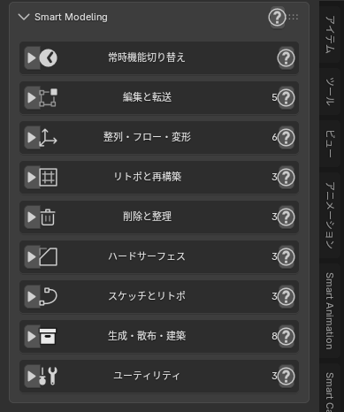
5. 機能の説明
画面の上から順に、見出しごとに説明します。見出しの右の「？」を押すと、同じ内容の説明が画面にも出ます。青い枠の「実例」は、スザンヌなどの簡単なモデルで実際に操作し、3D ビューでの変化を前と後で並べたものです。
5-1. 「Smart Modeling」パネルの見方（共通の作り）
パネルの中は、いちばん上の「常時機能切り替え」と、作業の種類ごとの 8 つの見出しでできています。見出しを押すと開いたり閉じたりします。見出しの右の数字は、その中のツールの数です。各見出しの中には、ツールが 1 行ずつ並びます。
場所「Smart Modeling」タブ →「Smart Modeling」パネル
| 表示 | 働き |
|---|---|
| 見出し（「編集と転送」など） | 押すと、その中のツールの一覧を開いたり閉じたりします。右の数字はツールの数です。右端の「？」で、その見出しの説明が出ます。 |
| ツールの行 | ツール名の行を押すと、そのツールの中身が開きます。行の右には歯車の印と「？」が出ます。読み込みの途中は「読み込み中」、読み込みに失敗した時は「エラー」が出ます。 |
| 「？」（ヘルプ） | 押すと、そのツールの説明の画面が出ます。「1. 機能概要」「2. 使用方法」などが並びます。「？」の共通の使い方は全体仕様書を見てください。 |
| 開いた中身（設定・「メニュー」・「実行」） | まだ一度も使っていないツールは、「設定」の欄と、「メニュー」「実行」の欄のボタンが並びます。「実行」の欄のボタンを押すと、そのツールだけが読み込まれて実行されます。読み込んだ後は、そのツール本来の画面に変わります。ボタンの名前や並びが変わる物があります（各ツールの説明を見てください）。 |
| 「手動キーマップ登録」 | ショートカットを登録できるツールの中身の下に出ます。コマンドごとに「用途」「登録場所」「登録ID」が並びます。このアドオンはショートカットを自動では登録しません。「登録ID」の右のコピーのアイコンを押して ID をコピーし、自分でキーマップに登録します。 |
5-2. 常時機能切り替え
読み込んだ後も裏で動き続ける機能（表示の補助、メニューへの追加、裏で動く処理など）を、まとめてオン・オフする場所です。ここに出るのは、本当に裏で動く仕組みを持つツールだけです。必要な物だけ「有効」にすると、起動やファイルの読み込みが軽いままになります。最初はすべて「無効」です（「Nパネル状態保存」だけは最初から「有効」です）。
場所「Smart Modeling」パネルのいちばん上の「常時機能切り替え」
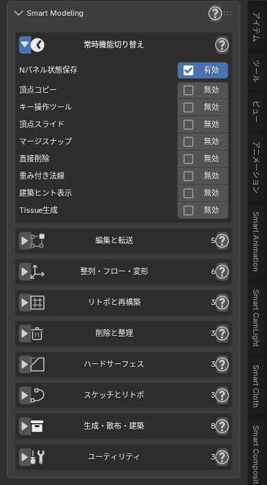
| 表示 | 働き |
|---|---|
| 「Nパネル状態保存」 | このパネルの開き具合や設定を、変えるたびに保存するかどうかを選びます。「有効」の時は、次に Blender を開いた時も同じ状態に戻ります。 |
| 「頂点コピー」 | 頂点コピーのライブプレビュー（貼り付け結果を画面に下見表示する仕組み）を動かすかどうかを切り替えます。 |
| 「キー操作ツール」 | キー操作ツールの裏で動く処理、メニュー連携、タブレット・アウトライナー連携を切り替えます。ショートカットは自動では入りません。 |
| 「頂点スライド」 | 頂点スライドの状態表示と変形の見張りを切り替えます。「有効」にすると、編集モードの 3D ビューのヘッダーの「UV」の右に、切り替えのボタンも出ます。頂点スライドそのものは、「頂点スライドを切替」かこのボタンを押すまで動きません。 |
| 「マージスナップ」 | マージスナップの状態表示とヘッダー連携を切り替えます。 |
| 「直接削除」 | 直接削除の裏で動く部分を切り替えます。「有効」にしても、Delete・Backspace キーへの登録は自動では行われません。 |
| 「重み付き法線」 | 「有効」にすると、編集モードの Alt+N の「法線」メニューのいちばん下に「重み付き法線を実行」が加わります。「無効」に戻すと消えます。 |
| 「建築ヒント表示」 | 建築生成のヒント表示を切り替えます。 |
| 「Tissue生成」 | Tissue の、フレームが変わった時の自動更新を切り替えます。自動更新が要らない時は「無効」のままにします。 |
| 「有効」／「無効」ボタン | 各行の右の、チェックの印が付くボタンです。押すたびに「有効」と「無効」が切り替わります。 |
5-3. 編集と転送
頂点の位置を写す、選んだ所をつなぐ・分けるなど、メッシュを直接編集するツールの見出しです。
場所「Smart Modeling」パネル →「編集と転送」
| 表示 | 働き |
|---|---|
| 「頂点コピー」 | 選んだ頂点の位置をスロット（一時的な置き場）に覚え、別のメッシュや別の選択へ貼り付けます。同じトポロジー（頂点の数とつながりが同じ形）への転送、近い形への転送、左右反転、面への投影に対応します。読み込む前は、「設定」の欄の多くの項目と、「実行」の欄の「コピー元」「同じ頂点番号で貼り付け」「同じ頂点番号を確認」「クリップボードスロットをクリア」「レポート消去」「補助ペースト」「補助チェック」などのボタンが並びます。読み込んだ後は、「コピー」「貼り付け」「確認」「クリア」「結果消去」の 5 つのボタンにまとまり、細かい項目は「設定」と「補助機能」の欄の中に入ります。初期設定では、貼り付け先で選んでいる頂点だけが変わります。レポートの書き出し形式は「JSON ファイル」と「CSV ファイル」から選びます。手動キーマップ登録には「コピー」「同番号へ貼り付け」「同番号を確認」「補助貼り付け」「補助確認」が出ます。 |
| 「メッシュ接続」 | 選んだ頂点や辺を素早くつなぎます。「実行」の欄の「選択を接続」を押すと、頂点選択ならすぐにつなぎ、辺選択なら「ポップアップを表示」がオンの時にポップアップを開きます。オフの時は、ポップアップを出さず「設定」の欄の値ですぐにつなぎます。ポップアップでは「通常接続」「フロー接続」、セグメント（分割数）、ピンチ、スライドを調整し、「適用」で実行、「キャンセル」で取りやめます。「選択を接続」は「手動キーマップ登録」の登録 ID でキーに登録しても使えます。 |
| 「メッシュ分割」 | 今の選択モード（頂点・辺・面）に合わせて、選んだ部分を分割します。ボタンは「メッシュ分割」です。 |
| 「キー操作ツール」 | 作業用のショートカット、メニュー連携、タブレット・アウトライナー連携などを含むツールキットです。裏で動く部分は「常時機能切り替え」で必要な時だけ有効にします。ショートカットは「手動キーマップ登録」の登録 ID をコピーして自分で登録します。「実行」の欄の「CAD ポリゴン削減」は、選んだメッシュにポリゴンを減らすモディファイアを付けます。「書き出し」「CAD ポリゴン削減を処理」「すべて読み込み」は、同じ処理を手動の 3 段階で行うボタンです。CAD ポリゴン削減のボタンを初めて押すと、この項目の「パネルUI」に設定と手動の手順が増えます。 |
| 「メッシュ編集ツール」 | 編集モードの整理や形作りを助ける追加の操作集です。「頂点の面取り」「辺をオフセット」「辺を丸める」「面のインセットフィレット」「面をカット」などのボタンが、「実行」の欄に並びます。 |
- コピー元のメッシュを編集モードにして、写したい頂点を選びます。
- 「頂点コピー」を開き、「コピー元」を押します。読み込んだ後は、このボタンは「コピー」になります。
- 貼り付け先のメッシュを編集モードにして、変えたい頂点を選びます。
- 「同じ頂点番号で貼り付け」を押します。読み込んだ後は「貼り付け」です。
- うまく合わない時は、「同じ頂点番号を確認」で一致する頂点の数を見ます。読み込んだ後は「確認」です。
実例向かい合う 2 つの頂点を辺でつなぐ（立方体で試した様子）
同じ面の上にある 2 つの頂点を選んで、その間に新しい辺を作り、面を 2 つに分けます。
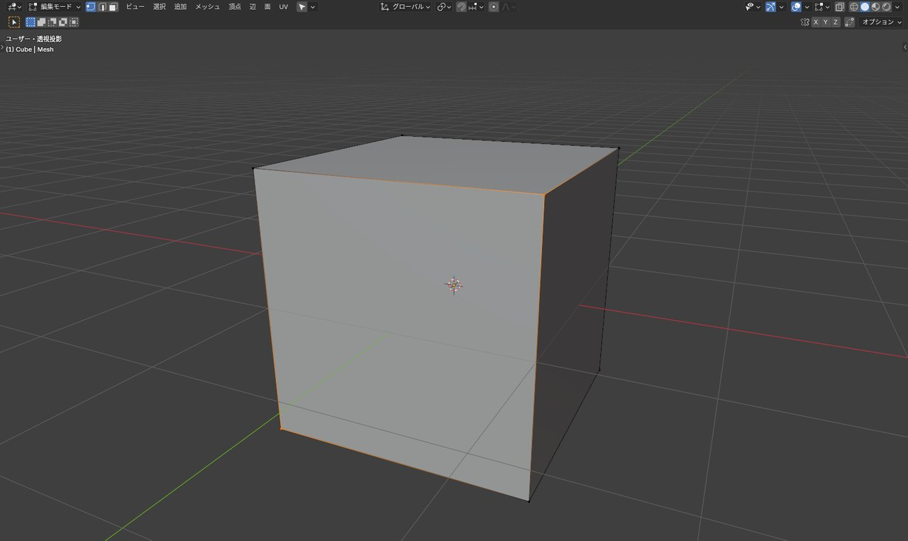
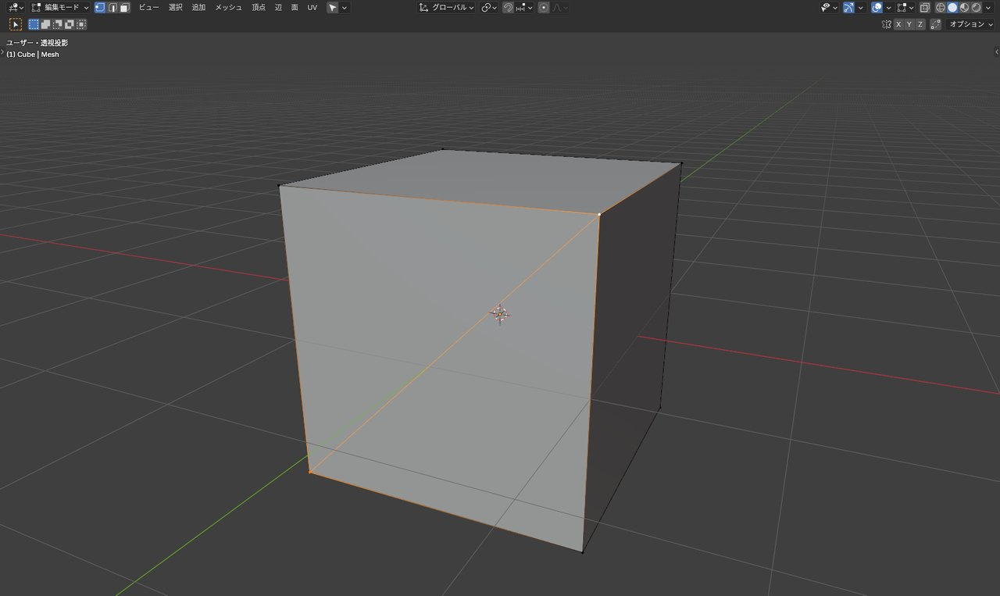
- 立方体を編集モードにし、頂点選択にする
- 正面の面の、対角の 2 つの頂点を選ぶ
- 「Smart Modeling」タブ →「編集と転送」→「メッシュ接続」を開く
- 「実行」の欄の「選択を接続」を押す
見どころ：正面の面に、選んだ 2 点を結ぶ斜めの辺が新しくでき、四角い面が三角 2 枚に分かれます。
実例耳を大きくした形を、もう 1 つのスザンヌへ写す（スザンヌ 2 つで試した様子）
頂点の数とつながりが同じ 2 つのメッシュで、片方の頂点の位置をもう片方へ写します。
- 左のスザンヌを編集モードにし、全部の頂点を選ぶ
- 「Smart Modeling」タブ →「編集と転送」→「頂点コピー」を開く
- 「コピー元」を押す
- オブジェクトモードに戻し、右のスザンヌを編集モードにして全部の頂点を選ぶ
- 「貼り付け」を押す（読み込む前の画面では「同じ頂点番号で貼り付け」）
見どころ：右のスザンヌの耳が、左と同じ大きさに変わります。オブジェクトの置き場所はそのままで、形だけが写ります。
実例細かい円柱の余分な線を減らす（CAD ポリゴン削減）（細かく分けた円柱で試した様子）
CAD から読み込んだ物のように細かく分かれたメッシュを、形を保ったまま軽くします。
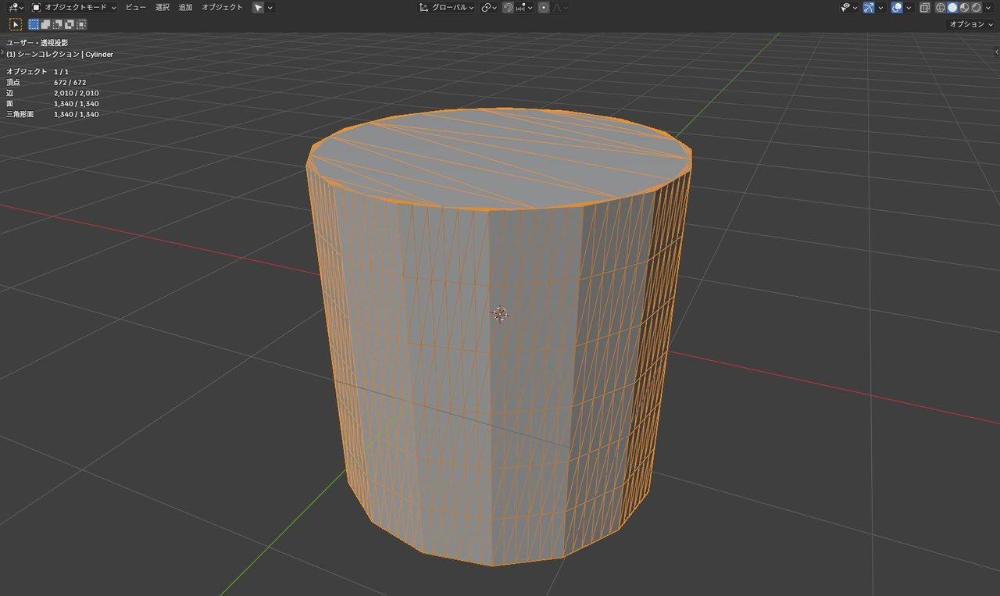
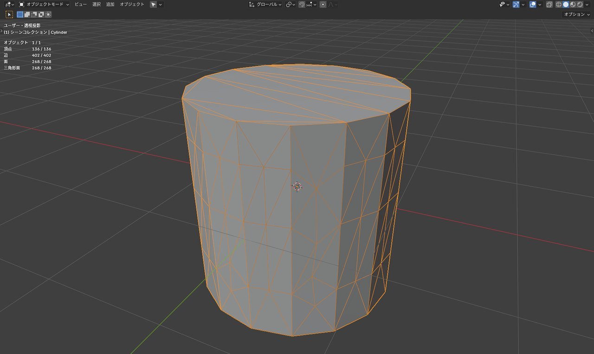
- オブジェクトモードで円柱を選ぶ
- 「Smart Modeling」タブ →「編集と転送」→「キー操作ツール」を開く
- 「実行」の欄の「CAD ポリゴン削減」を押す
見どころ：形はほとんど変わらないまま、線の数が減ります。元のメッシュは残り、モディファイアで減らしています。
5-4. 整列・フロー・変形
頂点をそろえる、辺の流れを整える、スライドさせるなど、形を整えるツールの見出しです。
場所「Smart Modeling」パネル →「整列・フロー・変形」
| 表示 | 働き |
|---|---|
| 「頂点スライド」 | 頂点や辺を、つながった辺に沿ってスライドさせます。ループ優先、リング優先、プロポーショナル編集（周りも一緒に動かす機能）に対応します。「設定」の欄では「エッジロック（安定化）」「ループ優先」「リング優先」「HUD表示」「ガイド表示」などを選べます。「実行」の欄のボタンは「頂点スライドを切替」と「スライドを開始」です。切り替えが ON の間は、普通の移動・回転・スケール（G/R/S）やギズモの操作も、辺に沿った動きになります。「スライドを開始」でのスライド中は、左クリックか Enter で確定、右クリックか Esc で取り消しです。 |
| 「メッシュ整列」 | 選んだ頂点・辺・面をそろえるプリセット集です。「実行」の欄のボタンは「整列プリセットを開く」「3D直線」「グリッドに揃える」「アノテート全削除」「辺の長さを統一」（選んだ辺の長さをそろえる）「フロー設定」です。一度使った後は、上に「設定」の欄（「均等に配置」「フローアルゴリズム」）が増えます。「整列プリセットを開く」はポップアップを開くボタンで、キーに登録しても使えます。ポップアップには「選択頂点ペアを鏡映整列」「X」「Y」「Z」、「視点でX」「視点でY」「視点でZ」、「中心に集結」「グリッドに揃える」、「辺の長さを統一」の「平均」「最長合わせ」「最短合わせ」、「アノテート線に揃える」、「3D直線」「2D直線（ビュー）」「フロー設定」が並びます。 |
| 「マージスナップ」 | 自動マージ（近い頂点をくっつける機能）とスナップ（吸着）を、1 回の操作で切り替えます。ボタンは「スナップサイクル」「クイックスナップ設定」「自動マージのみ切替」「マージとスナップを切替」「スナップのみ切替」です。「マージとスナップを切替」は、Shift を押しながらで自動マージのみ、Alt でスナップのみ、Ctrl で設定の小さな画面が出ます。 |
| 「エッジフロー」 | 辺の流れを整え、曲面に沿うように形を調整します。編集モードでループや辺を選び、「辺をカーブに設定」「辺のフローを設定」「辺を直線に設定」「頂点をカーブに設定」を押します。 |
| 「フレックス変形」 | 選んだ辺を、制御点を動かして曲げるツールです。「パスで変形」「クイック」で始めます。「設定」の欄で「制御点」の数を決めます。 |
| 「ループツール」 | 選んだループを円にする（「円形化」）、ならす（「リラックス」）、等間隔にする（「等間隔」）、つなぐ（「ブリッジ」）、平らにする（「平面化」）などの編集ができます。ほかに「カーブ」「グリースペンシルへ伸ばす」があります。 |
実例波打った頂点の列をまっすぐな直線にそろえる（格子の平面で試した様子）
でこぼこに波打った 1 列の頂点を選び、両端を結ぶまっすぐな線の上に並べ直します。
- 平面を編集モードにし、頂点選択にする
- 波打っている 1 列の頂点を、端から端まで選ぶ
- 「Smart Modeling」タブ →「整列・フロー・変形」→「メッシュ整列」を開く
- 「実行」の欄の「3D直線」を押す
見どころ：選んだ列の山と谷が消え、両端を結ぶ 1 本の直線に並びます。選んでいないほかの列は動きません。陰もすぐに正しくなり、列の両側の面がなめらかに見えます。
実例ポップアップの「Z」で頂点の高さをそろえる（格子の平面で試した様子）
「メッシュ整列」の「整列プリセットを開く」でポップアップを開き、選んだ頂点の高さ（Z）を 1 つにそろえます。
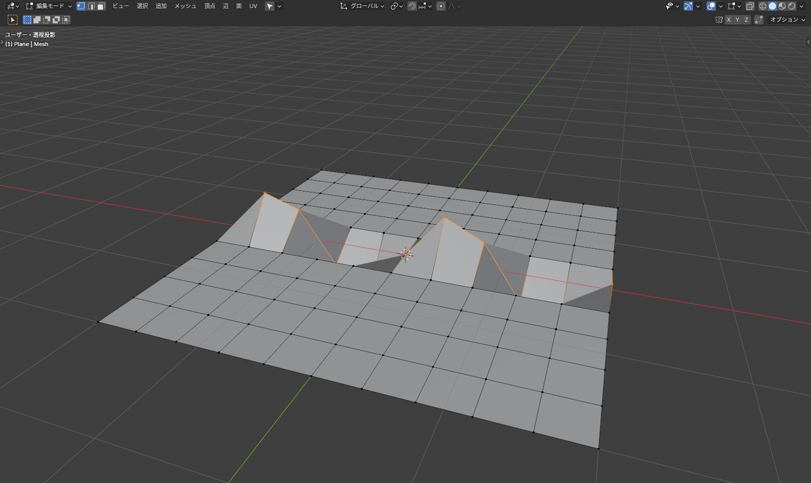
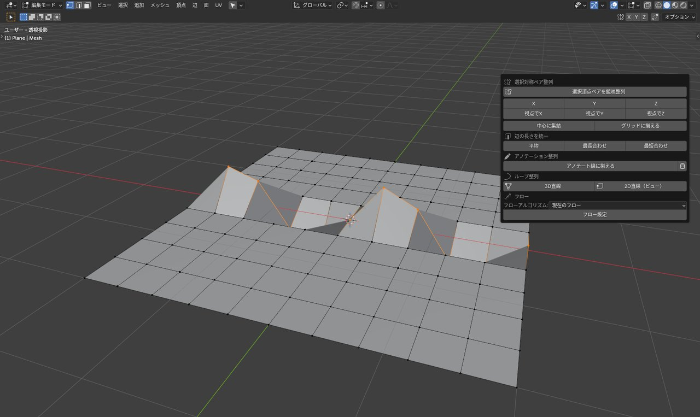
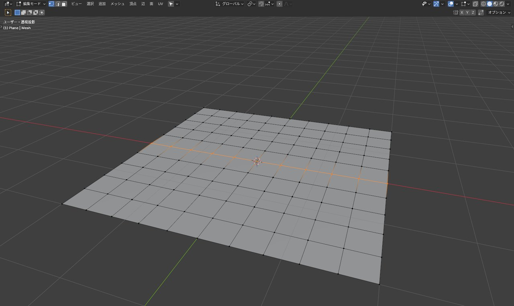
- 編集モードで、そろえたい頂点を選ぶ
- 「Smart Modeling」タブ →「整列・フロー・変形」→「メッシュ整列」を開く
- 「実行」の欄の「整列プリセットを開く」を押す（キーに登録して開くこともできます）
- ポップアップの「Z」を押す
見どころ：選んだ列の頂点が、同じ高さに並びます。「X」「Y」も同じように、その向きの座標をそろえます。
実例ヘッダーのボタンで頂点スライドを切り替える（立方体で試した様子）
「常時機能切り替え」で「頂点スライド」を「有効」にすると、編集モードの 3D ビューのヘッダーに切り替えのボタンが出ます。
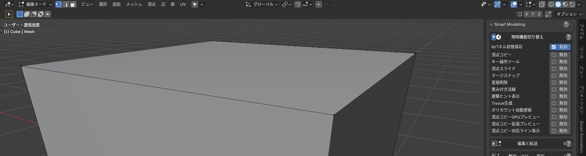
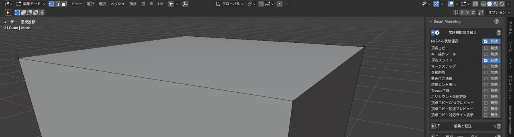
- 「Smart Modeling」タブ →「常時機能切り替え」を開く
- 「頂点スライド」を「有効」にする
- 編集モードにして、3D ビューのヘッダーの「UV」の右を見る
見どころ：「UV」メニューの右に矢印のボタンが増えます。押すと、パネルの「頂点スライドを切替」と同じように切り替わります。
5-5. リトポと再構築
リトポ（元の形の上に、きれいな面の流れのメッシュを作り直す作業）や、面を作り直すツールの見出しです。
場所「Smart Modeling」パネル →「リトポと再構築」
| 表示 | 働き |
|---|---|
| 「クアッドリトポ」 | 四角い面の帯（クアッドストリップ）や、リトポの補助の形を描いて作るツールです。よく使うボタンは「クアッドストリップを描画」です。ほかに「リトポ設定」、面を合わせる相手を決める「選択から設定」「アクティブを使用」「解除」、「クアッドフィールド描画（ドラッグ）」「境界トレース」「面張り / リラックス / 投影」「ガイド辺を登録」「選択をターゲットへ投影」などがあります。手動キーマップ登録には「クアッドストリップを描画」「リトポペンを開始」が出ます。描画中は、画面に出る操作の案内に従って確定・取り消しをします。 |
| 「面作成」 | 選んだ頂点や辺から、次の面を素早く作ります。ボタンは「辺/面を作成」です。リトポや、欠けた面の穴埋めに向いています。 |
| 「PolyQuiltリトポ」 | 面の上でポリゴンを描いたり直したりする、リトポ向けのツールです。「PolyQuilt」のボタンで起動します。「空のメッシュオブジェクトを追加」で描き始める物を作れます。 |
実例あいた穴に面を張る（格子の平面で試した様子）
穴のまわりの 4 つの頂点を選び、そこに面を 1 枚作ります。
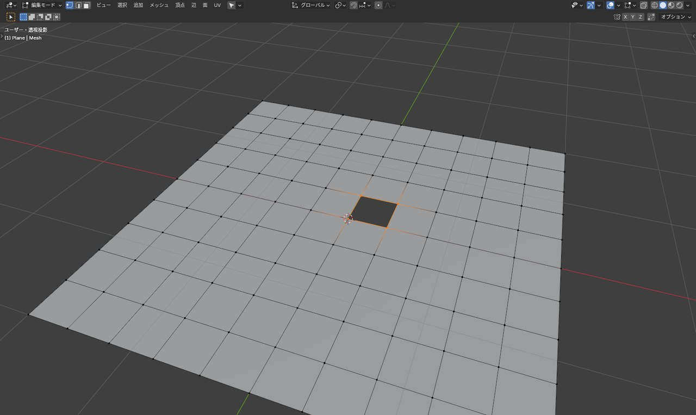
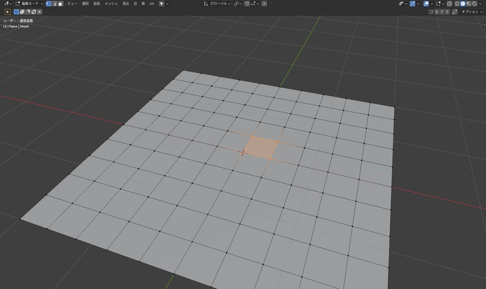
- 平面を編集モードにし、頂点選択にする
- 穴のまわりの 4 つの頂点を選ぶ
- 「Smart Modeling」タブ →「リトポと再構築」→「面作成」を開く
- 「実行」の欄の「辺/面を作成」を押す
見どころ：穴だった所に新しい面ができて、平面がつながります。
5-6. 削除と整理
要らない部分を消す、オブジェクトを整える、メッシュの問題を直すツールの見出しです。
場所「Smart Modeling」パネル →「削除と整理」
| 表示 | 働き |
|---|---|
| 「直接削除」 | 編集モードで、確認の画面を減らして、選択に合った削除をすぐ行います。「実行」の欄のボタンは「選択を削除」「貫通選択を削除」「Deleteキーを上書き」「Backspace 上書き」「オブジェクトを削除」「履歴削除（モディファイア削除）」（選んだオブジェクトのモディファイアを全部消す）です。「設定」の欄には「スマートコンテキスト」「非表示を無視」「自動穴埋め」などがあります。手動キーマップ登録には「選択を削除」「Deleteキーを上書き」「Backspaceを上書き」「貫通選択を削除」「オブジェクトを削除」「履歴を削除」が出ます。 |
| 「モデル整理」 | 選んだメッシュオブジェクトを、まとめて整理します。名前の整理、トランスフォームの適用、メッシュデータの整理、モディファイアの扱い、バックアップと復元に対応します。中には、いちばん上の「実行」の欄（「選択を整理」「バックアップを復元」とごみ箱の印のボタン）と、「プリセット」「モディファイア」「トランスフォーム」「表示」「データ整理」「原点 / ピボット」「リネーム / コレクション」「事前チェック」「バックアップ / 復元」の欄があります。「原点 / ピボット」では「原点（0,0,0）」などを選びます。 |
| 「選択を整理」 | モデル整理のいちばん上の「実行」の欄にあるボタンです。選んだ設定で整理します。 |
| 「バックアップ有効」 | 「バックアップ / 復元」の欄にあります。オンにすると、整理の前に元に戻すためのバックアップを作ります。最初はオフです。今あるバックアップの数は、この下の「保存済みバックアップ」に出ます。 |
| 「バックアップを復元」 | 「実行」の欄の「選択を整理」の右にあるボタンです（幅が狭いと「バックアップ...」と見えます）。バックアップから、整理する前の状態に戻します。その右のごみ箱の印のボタンは、要らなくなったバックアップデータを削除します。 |
| 「データ名をオブジェクト名に改名」 | モデル整理の「データ整理」の欄のいちばん下にあるボタンです。選んだ各オブジェクトのデータの名前を、オブジェクトの名前にそろえます。複数で共有しているデータやリンクしたデータは飛ばして報告します。 |
| 「メッシュ修復」 | よくあるメッシュの問題を見つけて直すツールです。書き出し、シミュレーション、ブーリアンの前の確認に向いています。「実行」の欄には「統合/反転」「スムーズ」「減らす」「整える」「リメッシュ」「自動修正」「選択を平らにする」などのボタンが並びます。 |
実例付けたモディファイアをまとめて外す（スザンヌで試した様子）
細分化とねじりのモディファイアが付いたスザンヌから、モディファイアを一度に全部取り除きます。
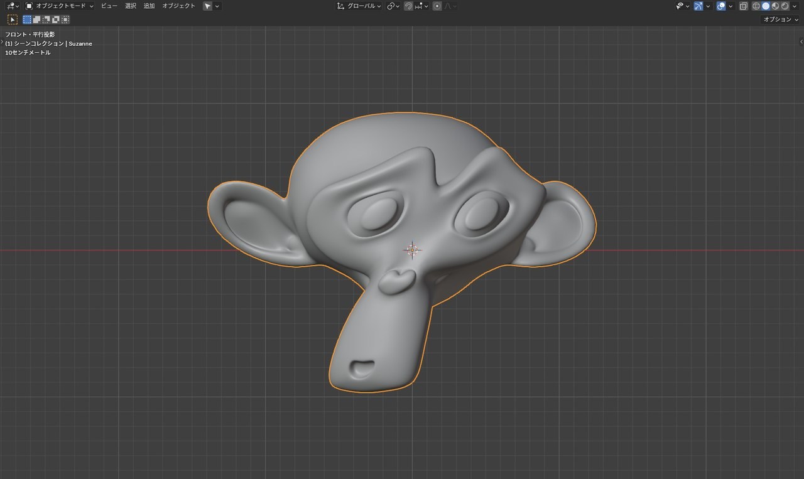
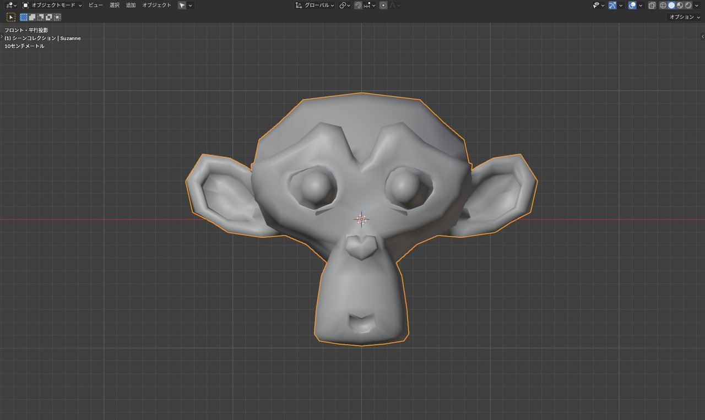
- オブジェクトモードでスザンヌを選ぶ
- 「Smart Modeling」タブ →「削除と整理」→「直接削除」を開く
- 「履歴削除（モディファイア削除）」を押す
見どころ：なめらかでねじれた形が、モディファイアを付ける前の、角ばった元のスザンヌに戻ります。メッシュそのものは変わりません。
5-7. ハードサーフェス
機械や小物のように、角がはっきりした形（ハードサーフェス）を作る時の補助ツールの見出しです。
場所「Smart Modeling」パネル →「ハードサーフェス」
| 表示 | 働き |
|---|---|
| 「クリースプリセット」 | 辺のクリース値（細分化した時に角をどれだけ立てるか）を、数値のボタンで付けたり、コピーしたり、値で選んだりします。読み込む前の「設定」の欄には、「パイメニューを使用」「ボタン数（選択）」「値（選択）」「ボタン数（リンク）」「値（リンク）」「シームで区切る」「シャープで区切る」「マテリアルで区切る」が並びます。「ボタン数」と「値」で、数値のボタンの数と値を決めます。その下に「選択中の辺のクリース」「クリース一致許容差」「選択するクリース値」「近似ペースト許容差」が並び、各項目の名前は入力欄の上に表示されます。「実行」の欄のボタンは「クリースプリセットを開く」「同じ数値の辺を選択」「選択辺のクリースをコピー」「同トポロジーへペースト」「近似ペースト」です。「クリースプリセットを開く」を押すと、数値のボタンの並んだポップアップが開きます。キーに登録しても使えます。一度使った後は、同じ数値のボタンと、「ボタン数」「値」を変える「プリセット値」の欄がパネルにも出ます。「選択」の欄のボタンは選んだ辺に、「リンク」の欄のボタンはつながった辺にも同じ値を付けます。つながった辺をたどる範囲は、「リンク範囲の区切り」の「シーム」「シャープ」「マテリアル」を押すと、その境目で止まります。Nパネル状態保存を有効にして保存したボタン数と値は、再有効化後もツールの読み込み前・読み込み後の両方へ反映されます。 |
| 「重み付き法線」 | 重み付き法線（面の大きさに合わせて陰影の向きを整える仕組み）を付けます。ボタンは「重み付き法線を適用」です。 |
| 「ボルト生成」 | ボルト、ナット、ネジのような形を作ります。ボタンは「ボルトを追加」です。種類・寸法・ネジ山を決めて追加します。 |
実例数値のボタンを自分の値に変える（細分化した立方体で試した様子）
「ボタン数（選択）」「値（選択）」を変えて、よく使うクリースの値だけをボタンに並べます。Nパネル状態保存を有効にして保存すると、再有効化後も読み込み前・読み込み後で同じボタン数と値が使われます。
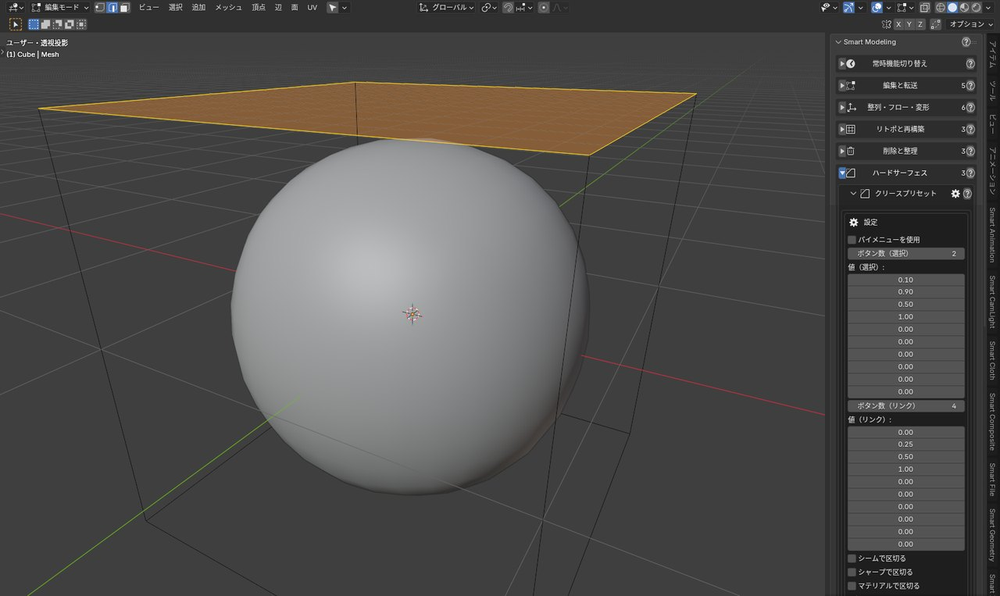
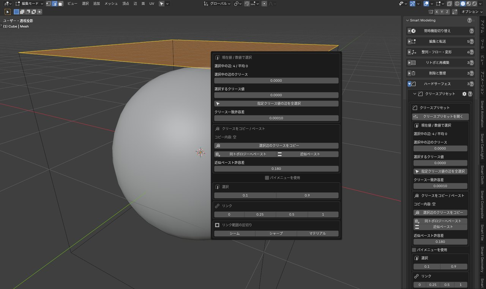
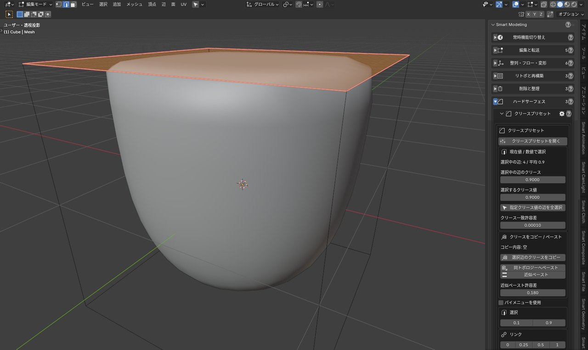
- 「ハードサーフェス」→「クリースプリセット」を開く
- 「設定」の欄の「ボタン数（選択）」を 2 に、「値（選択）」の初めの 2 つを 0.1 と 0.9 にする
- 編集モードで上の 4 本の辺を選び、「クリースプリセットを開く」を押す
- ポップアップの「選択」の欄の「0.9」を押す
見どころ：ポップアップの「選択」の欄が「0.1」「0.9」の 2 つになります。「0.9」を押すと、「1」より少し丸みを残した角になります。一度使った後は、同じ数値のボタンと「プリセット値」の欄がパネルにも出ます。
実例上の辺にクリースを付けて角を立てる（細分化した立方体で試した様子）
細分化で丸くなった立方体の、上の 4 本の辺にクリース 1 を付けて、上の縁だけをくっきりさせます。
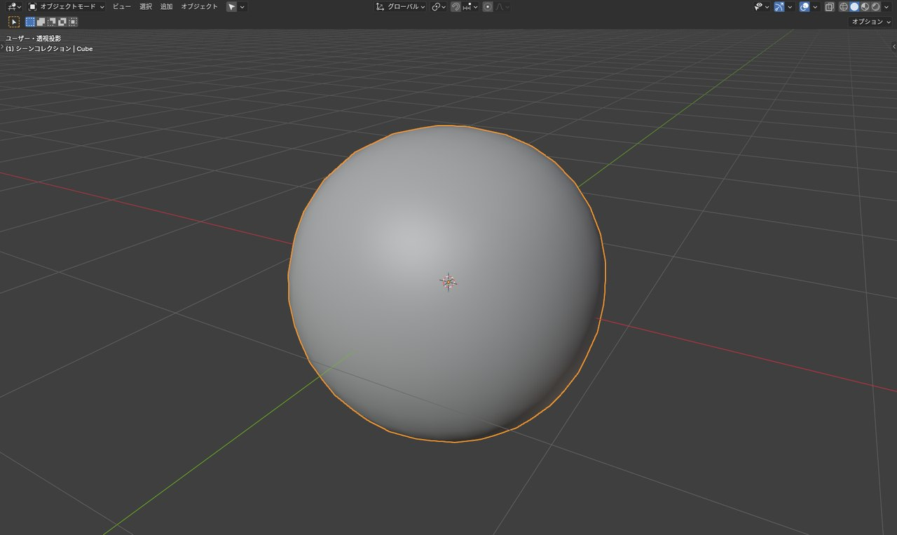
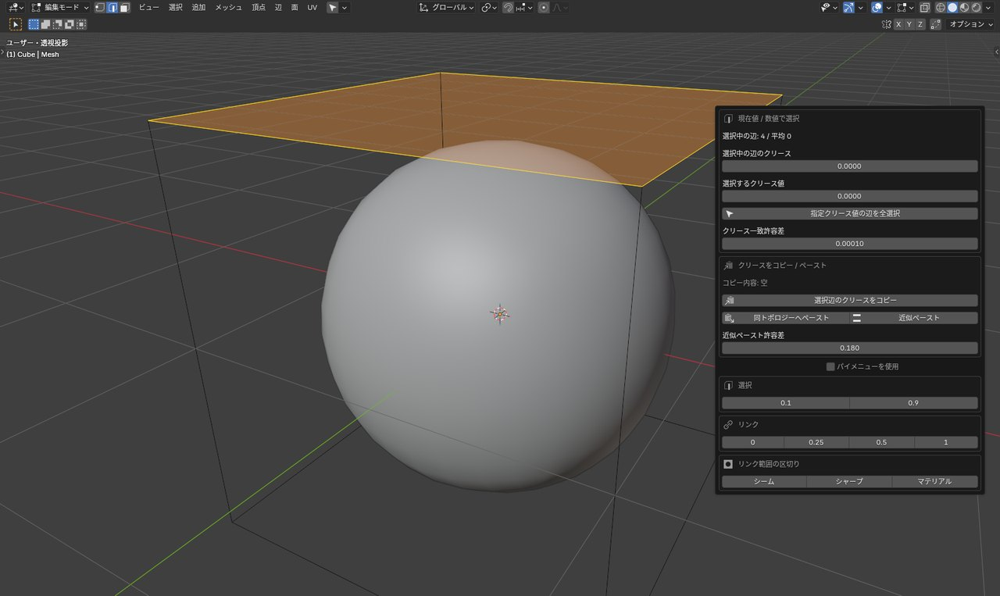
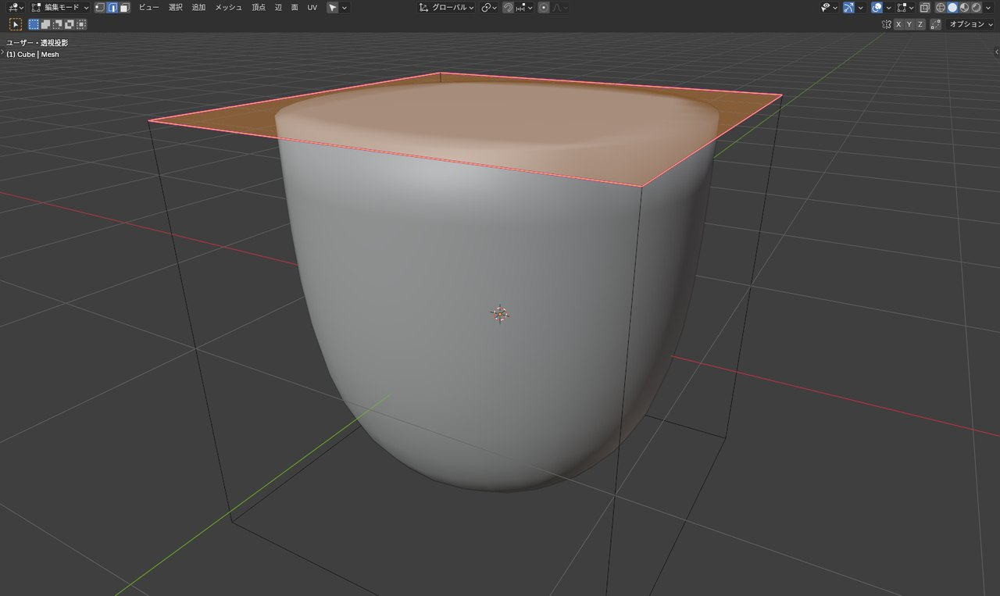
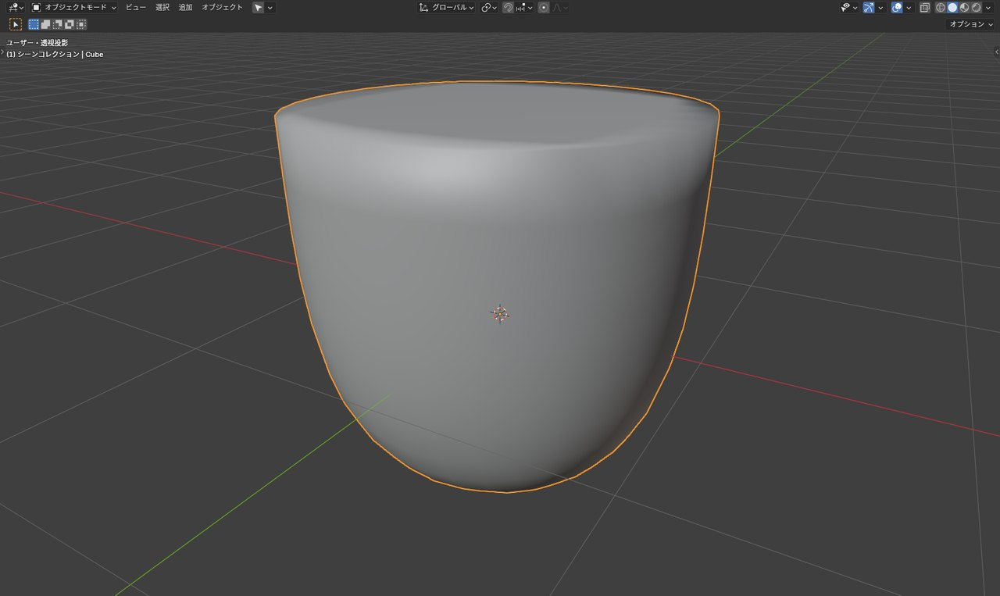
- 細分化モディファイアの付いた立方体を編集モードにし、辺選択にする
- 上の面のまわりの 4 本の辺を選ぶ
- 「ハードサーフェス」→「クリースプリセット」を開く
- 「実行」の欄の「クリースプリセットを開く」を押す
- ポップアップの「選択」の欄の数値のボタン「1」を押す
見どころ：丸かった上の縁が、細分化したまま角の立った形になります。クリースを付けた辺は、編集モードでは色の付いた線で表示されます。
実例面取りした箱の陰影のにじみを消す（面取りした立方体で試した様子）
面取りした箱をスムーズシェードにすると、大きな面に斜めの陰がにじみます。重み付き法線で、面の陰影を平らに整えます。
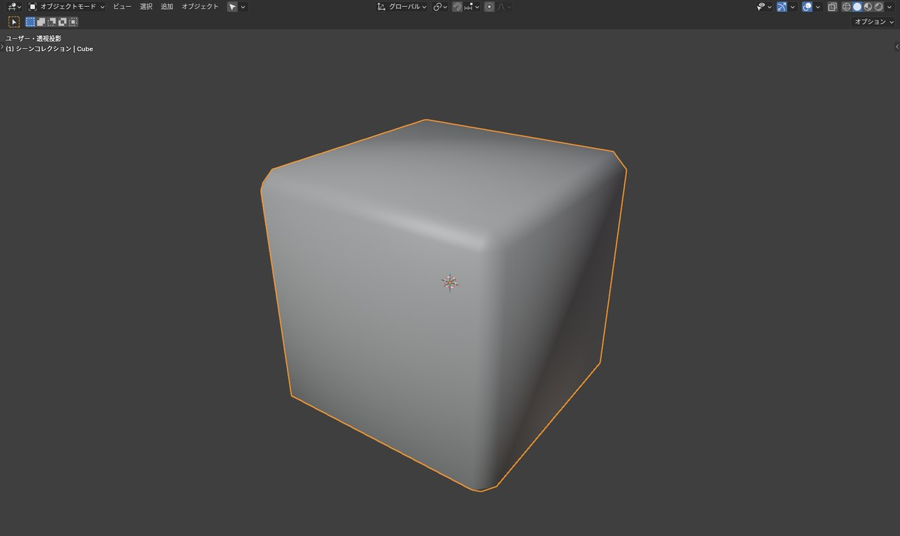
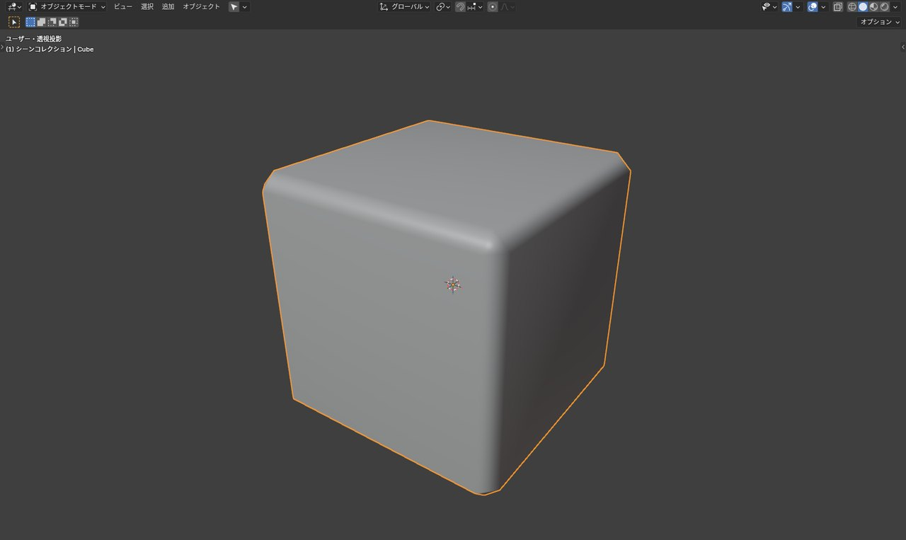
- オブジェクトモードで箱を選ぶ
- 「Smart Modeling」タブ →「ハードサーフェス」→「重み付き法線」を開く
- 「重み付き法線を適用」を押す
見どころ：左の面と上の面の斜めのにじみが消えて、どの面も一様な明るさになり、丸めた角だけがなめらかに見えます。形（頂点の位置）は変わりません。
5-8. スケッチとリトポ
注釈（画面に手描きする線）から帯状の面を作る、カーブを追加・編集するツールの見出しです。
場所「Smart Modeling」パネル →「スケッチとリトポ」
| 表示 | 働き |
|---|---|
| 「スケッチサーフェス」 | 注釈の線を、帯状の面（サーフェスストリップ）やカーブに変換します。「サーフェスストリップに変換」は、線に沿った帯の面を作ります。帯の幅は「設定」の欄の「サーフェスの幅」で決めます。帯の面の表側は、変換した時の表示の手前を向きます。帯は今の表示から見て線の左右に広がるので、線を描いた表示のまま押すと、どの向きの表示で描いても同じ幅の帯に見えます。「カーブに変換」は、線と同じ形のカーブを作ります。「ベベルをプレビュー」に値を入れると、太さの付いたカーブになります。ほかに、クアッドリトポと同じ「クアッドフィールド描画設定」「境界トレース」「リトポ設定」「面張り / リラックス / 投影」があります。 |
| 「カーブオブジェクト」 | 標準にはない種類のカーブや、カーブの基本形を追加します。 |
| 「カーブツール」 | ベジェカーブや NURBS カーブ・サーフェスを編集する道具を追加します。 |
- 帯を作りたい向きの表示にして（真上ならテンキーの 7、正面ならテンキーの 1）、注釈の線を描きます。
- 表示を変えずに、「スケッチサーフェス」を開き、「サーフェスストリップに変換」を押します。
- できた形の設定を、必要なら調整します。
実例手描きの線を帯状の面にする（真上の表示）（注釈の線で試した様子）
真上からの表示で描いた注釈の線から、線に沿った帯状の面を作ります。帯の面の表側は、変換した時の表示の手前を向きます。

- 3D ビューを真上からの表示にする（テンキーの 7）
- 注釈の線を描く
- 「Smart Modeling」タブ →「スケッチとリトポ」→「スケッチサーフェス」を開く
- 「設定」の欄の「サーフェスの幅」で帯の幅を決める
- 「サーフェスストリップに変換」を押す
見どころ：細い線だった注釈に沿って、幅のある帯の面ができます。帯は、今の表示から見て線の左右に、「サーフェスの幅」の値の分だけ広がります。
実例正面の表示で描いた線も帯の面にする（注釈の線で試した様子）
帯は、変換する時の表示から見て線の左右に広がります。正面からの表示で描いても、描いた表示のまま幅のある帯になります。帯の面の表側は、変換した時の表示の手前を向きます。
- 3D ビューを正面からの表示にする（テンキーの 1）
- 注釈の線を描く
- 「Smart Modeling」タブ →「スケッチとリトポ」→「スケッチサーフェス」を開く
- 「設定」の欄の「サーフェスの幅」で帯の幅を決める
- 「サーフェスストリップに変換」を押す
見どころ：正面から見たまま、線の上下に同じ幅で広がった帯ができます。斜めの表示に回すと、帯が表示に向いた 1 枚の面であることが分かります。
5-9. 生成・散布・建築
地形・木・ツタ・雪・建物のパーツなどを自動で作るツールや、物を表面にばらまく（散布）ツールの見出しです。
場所「Smart Modeling」パネル →「生成・散布・建築」
| 表示 | 働き |
|---|---|
| 「建築生成」 | 部屋、ドア、窓、階段などの建築向けの物を作ります。 |
| 「セル破砕」 | 選んだオブジェクトを、細かい破片に分けます。最初は少ない破片数で試します。 |
| 「ツタ生成」 | メッシュの上や近くの開始点から、ツタの形を作ります。 |
| 「オブジェクト散布」 | 別のオブジェクトや面の上に、物をばらまきます。 |
| 「雪生成」 | 選んだオブジェクトの上を向いた面に、雪のメッシュを作ります。「カバレッジ」で雪の量を、「高さ」で雪の粒の大きさを決めて、「雪を追加」を押します。編集モードで押すと、オブジェクトモードへ切り替えて作ります。「選択した面」をオンにすると、選んだ面にだけ作ります。面を選んでいない時や、上を向いた面が無い時は、作らずにメッセージを出します。 |
| 「地形生成」 | 地形の設定から、地面のメッシュを作ります。 |
| 「Tissue生成」 | メッシュの模様の敷き詰め（テッセレーション）やリアクション拡散を行うツールです。 |
| 「樹木生成」 | 幹・枝・葉を持つ木を、プリセットや設定から作ります。 |
実例スザンヌの頭に雪を積もらせる（スザンヌで試した様子）
選んだメッシュの上を向いた面に、雪のかたまりを 1 つのメッシュとして作ります。
- オブジェクトモードでスザンヌを選ぶ
- 「Smart Modeling」タブ →「生成・散布・建築」→「雪生成」を開く
- 「雪を追加」を押す
見どころ：頭や耳の上、鼻の上など、上を向いた所にだけ白い雪が載ります。あごの下には積もりません。雪は別のオブジェクトなので、元のスザンヌは変わりません。
5-10. ユーティリティ
コマンドを直接探して使う一覧や、ほかのアドオンと連携する補助、まとめたコマンド集の見出しです。
場所「Smart Modeling」パネル →「ユーティリティ」
| 表示 | 働き |
|---|---|
| 「コマンドブラウザー」 | 同梱のツールから見つけたメニューとオペレーター（コマンド）の数と、ツールの読み込みの状況を表示します。読み込んだツールのコマンドのボタンを直接押したい時に使います。 |
| 「モディファイア補助」 | SmartModifier Suite と連携する補助コマンドを表示します。SmartModifier Suite が無い時や無効の時は「未検出」と出て、ボタンは出ません。 |
| 「統合モデリングツール」 | ブーリアン、ループ整理、面張り、クアッドの再構築、CAD の整理、散布、地形、カーブのパイプ、作業平面、フォールオフ変形などのコマンドをまとめたものです。読み込む前は「実行」の欄に「コンテキストに応じて作成」「ブーリアン融合を作成」「地形を生成」「シェル厚みを作成」「クアッドを再構築」「作業平面と原点を設定」などのボタンが 1 列に並び、その下の「手動キーマップ登録」にコマンドごとの欄が出ます。読み込んだ後は、「コンテキスト編集とトポロジー」「ハードサーフェスとブーリアン」「カーブ、面追従、リトポ」「プロシージャル生成」「整理、CAD、配置」の 5 つの組に分かれた大きなアイコンのボタンになります。今の選択で使えないボタンは薄く表示されます。 |
実例円柱でスザンヌに穴をあける（ブーリアン）（スザンヌと円柱で試した様子）
頭を貫く円柱をカッター（削る側）にして、スザンヌに丸い穴をあけます。元の形は残したまま、モディファイアで削ります。
- カッターの円柱を選び、Shift キーを押しながらスザンヌを選んで、スザンヌをアクティブにする
- 「Smart Modeling」タブ →「ユーティリティ」→「統合モデリングツール」を開く
- 「実行」の欄の「ブーリアン融合を作成」を押す
見どころ：円柱が隠れ、通っていた所に丸い穴があきます。あわせて角に小さな面取り（ベベル）が付き、陰影がくっきりした角ばった見た目になります。
そのほかの画面

6. よく使う手順
頂点の位置を、同じ形の別メッシュへ写す
片方のメッシュで直した形を、頂点の数とつながりが同じ別のメッシュに写します。
- 「Smart Modeling」タブを開き、「編集と転送」の「頂点コピー」を開きます。
- コピー元のメッシュを編集モードにして、写したい頂点を選びます。
- 「コピー元」を押して、位置を覚えさせます（読み込んだ後は「コピー」ボタンです）。
- 貼り付け先のメッシュを編集モードにして、変えたい頂点を選びます。
- 「同じ頂点番号で貼り付け」を押します（読み込んだ後は「貼り付け」です）。
- うまく合わない時は、「同じ頂点番号を確認」で一致する頂点の数を見ます（読み込んだ後は「確認」です）。
結果：貼り付け先の、選んだ頂点だけが、コピー元と同じ位置に動きます。
よく使うコマンドにショートカットを付ける
このアドオンは自動でショートカットを入れないので、必要なコマンドだけ自分で登録します。
- 使いたいツールの行を開き、下の「手動キーマップ登録」を見ます。
- 使うコマンドの「登録場所」を確かめます（例：編集 > プリファレンス > キーマップ > 3Dビュー > メッシュ）。
- 「登録ID」の右のコピーのアイコンを押します。
- プリファレンスの「キーマップ」で「登録場所」と同じ所を開き、新しい項目を追加して、コピーした ID を貼り付けます。
- 空いているキーを割り当てます。
結果：そのコマンドが、決めたキーで動くようになります。
頂点スライドを、普通の移動のように使う
G キーなどの普通の操作のまま、頂点を辺に沿ってだけ動かします。
- 「整列・フロー・変形」の「頂点スライド」を開きます。
- メッシュを編集モードにします。
- 「実行」の欄の「頂点スライドを切替」を押して ON にします。
- 頂点を選び、G キーやギズモで動かします。
- 終わったら、もう一度「頂点スライドを切替」を押して OFF にします。
結果：ON の間は、移動・回転・スケールが、つながった辺に沿った動きになります。
書き出しの前に、オブジェクトをまとめて整える
スケールの適用や不要データの削除などを、まとめて済ませます。
- オブジェクトモードで、整えたいメッシュオブジェクトを選びます。
- 「削除と整理」の「モデル整理」を開きます。
- 「プリセット」を選び、「トランスフォーム」や「データ整理」などの欄を確かめます。
- 元に戻せるようにしたい時は、「バックアップ / 復元」の「バックアップ有効」をオンにします。
- 「選択を整理」を押します。
- 結果が思った通りでない時は「バックアップを復元」を押します。
結果：選んだオブジェクトが、設定どおりに整理されます。バックアップを有効にした時は、整理の前の状態に戻せます。
クリースを数値のボタンで付ける
「クリースプリセットを開く」のポップアップを使い、選んだ辺に 0.5 や 1 のクリースを付けます。
- メッシュを編集モードにして、辺を選びます。
- 「ハードサーフェス」の「クリースプリセット」を開きます。
- 「実行」の欄の「クリースプリセットを開く」を押します（「手動キーマップ登録」の登録 ID でキーに登録しても開けます）。
- 「選択」の欄の数値のボタンを押します。
結果：選んだ辺に、押した値のクリースが付きます。
7. 困った時
- ツールを開いたら「この常時機能は無効です。」と出ました。使えないのですか？
- 使えます。この表示は、裏でずっと動く機能が止まっているという意味です。ボタンを押せば、そのツールは読み込まれて動きます。裏で動き続けてほしい時だけ、「常時機能切り替え」で「有効」にしてください。
- ショートカットが効きません。
- このアドオンは、ショートカットを自動では登録しません。各ツールの「手動キーマップ登録」から登録 ID をコピーして、プリファレンスのキーマップに自分で登録してください。
- 「モディファイア補助」にボタンが出ません。
- この項目は SmartModifier Suite と連携します。SmartModifier Suite がインストールされ、有効になっている時だけボタンが出ます。無い時は「未検出」と表示されます。
- Alt+N の法線メニューに、重み付き法線の項目がありません。
- 「常時機能切り替え」で「重み付き法線」を「有効」にしてください。Alt+N の「法線」メニューのいちばん下に「重み付き法線を実行」が加わります。
- 「バックアップを復元」を押しても元に戻りません。
- バックアップは、「バックアップ / 復元」の「バックアップ有効」がオンの時だけ作られます。最初はオフなので、整理する前にオンにしてください。
- ツールの行の右に「エラー」と出ました。
- そのツールの読み込みに失敗しています。行を開くと、失敗の理由の一部が表示されることがあります。
アドオンが出ない・日本語にならない、など全部のアドオンに共通のことは、全体仕様書の「困った時」を見てください。
8. 用語集
- N パネル（サイドバー）
- 3D ビューなどの右側に出る細長い欄です。N キーで開け閉めします。
- 編集モード
- メッシュの頂点・辺・面を直接いじるモードです。Tab キーで切り替えます。
- 常時機能
- 一度読み込むと、裏でずっと動き続ける機能です。表示の補助、メニューへの追加などがあります。
- トポロジー
- メッシュの頂点の数と、そのつながり方のことです。
- リトポ
- 元の形の上に、面の流れがきれいなメッシュを作り直す作業です。
- クリース
- 細分化した時に、辺の角をどれだけ立てるかを決める値です。
- 重み付き法線
- 面の大きさなどに合わせて、陰影の向きを整える仕組みです。ハードサーフェスの見た目がきれいになります。
- 自動マージ／スナップ
- 自動マージは近い頂点を自動でくっつける機能です。スナップは、動かす物を頂点や面に吸着させる機能です。
- 注釈
- 画面に手描きで書き込める線です。
- キーマップ
- キーとコマンドの組み合わせの表です。プリファレンスで編集します。
- 登録ID
- キーマップに登録する時に使う、コマンドの名前です。「手動キーマップ登録」のコピーのアイコンでコピーできます。
- リドゥパネル
- コマンドを実行した直後に、3D ビューの左下に出る調整欄です。直前の操作の数値を直せます。
9. 付録：版と確認値・できないこと
| アドオン | SmartModeling Suite（smart_modeling_suite） |
|---|---|
| 版 | 1.0.0 |
| ZIP | SmartModelingSuite_1.0.0.zip |
| 大きさ | 3,122,923 バイト |
| SHA256 | 007ef7d6095124a7e6c4a67ca027c8ae2ce36cd33707aa48cc397c03ee8b807f |
できないこと・注意
- ショートカットは自動で登録されません。「手動キーマップ登録」を見て自分で登録します。
- 各ツールは、ボタンを押した時に初めて読み込まれます。読み込みの間は、行の右に「読み込み中」と出ます。
- 読み込むと、そのツール本来の画面に変わるため、ボタンの並びが変わる物があります。スイートの見出しの言語は読み込み前後でそろえます。狭い欄で長いコマンド名が収まらない場合は、名前を折り返して、その下の「実行」ボタンで操作します。
- 「モディファイア補助」は、SmartModifier Suite が有効な時だけ使えます。
- モデル整理のバックアップは、「バックアップ有効」をオンにした時だけ作られます。
- Smart Tools Manager で表示する場所を決めている時は、パネルが出る画面がその設定に従います。
- 手動キーマップ登録の「用途」の文には、ツールの英語名（Direct Delete、Model Organizer など）がそのまま出る所があります。
SmartModeling Suite 解説書 v1.0.0 ／ 2026-11-18 作成